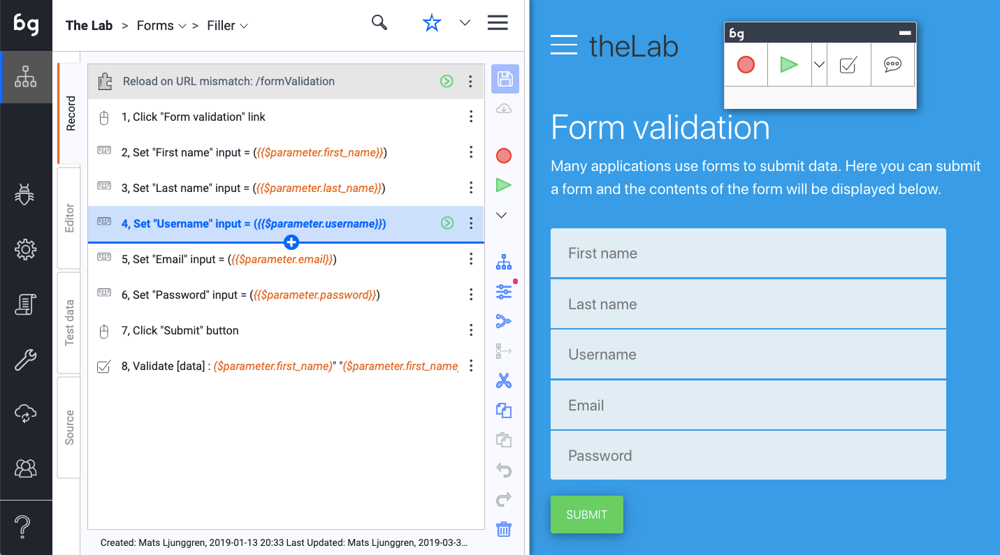
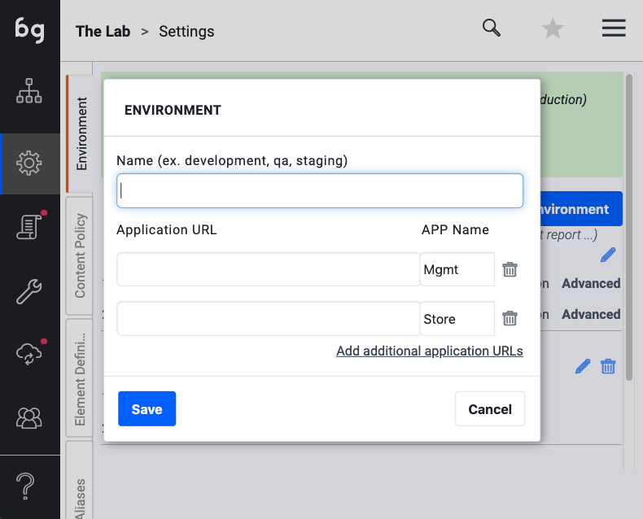
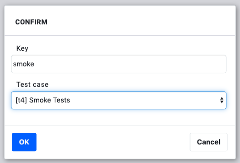
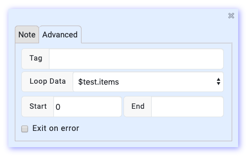
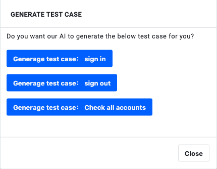
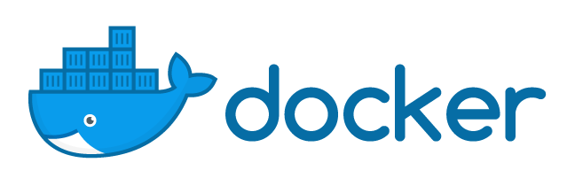

＃Boozang文档

这是Boozang测试自动化工具的官方文档。它可以作为一本书阅读或用作参考。使用左侧的导航栏导航到感兴趣的主题。本文档提供英语和中文版本。
还有其他一些资源可以了解Boozang
-视频页面：https：//boozang.com/videos/ -免费的Udemy课程：https：//www.udemy.com/course/advanced-test-automation-using-boozang/ -工具内帮助：通过点击工具栏中的问号激活 -我们的博客：https：//boozang.com/blog/
如有任何建议/改进，请发送电子邮件至support@boozang.com
概述

在本节中，我们将简要概述Boozang功能以及何时使用Boozang工具是一个好主意。
介绍Boozang
核心
为什么？布藏创建了...
Boozang是仅使用Javascript为现代Web构建的无代码前端测试工具。它使开发人员和质量保证工程师无需编程即可快速开发前端测试。
Boozang不是基于Selenium，并且没有Selenium和Selenium Web驱动程序的限制。Boozang使用自己的基于自然语言的选择语言，从而为TDD / BDD（测试/行为驱动的开发）提供本地支持，并允许从模型自动生成测试。
关于技术
博藏测试技术分为两部分。该工具的专有部分可让您快速编写测试记录，并基于Google Puppeteer构建开放源代码测试运行器，后者可让您从命令行运行测试并将Boozang集成到CI流或其他工具中。
-
Boozang工具：在https://boozang.com上注册可免费获得付费许可。
-
Boozang测试运行程序：对于Boozang Puppeteer开源测试运行程序，请参阅https://github.com/ljunggren/bz-puppeteer和Docker容器https://github.com/ljunggren/bz-docker -xvfb
＃＃＃ 特征
稳定的代码更改
Boozang从根本上不同于其他测试工具。Boozang使用自然语言来标识浏览器元素而不是DOM元素，从而使测试对于基础实现中的更改极为稳定。可以完全更改基础技术而不影响测试。您可以从Java旧版应用程序转到Angular，并且只要业务需求满足，测试就保持不变。
自动文档
由于Boozang完全基于自然语言，因此所有记录的测试也是用户手册。当标签更改时，例如将“创建项目”更改为“添加项目”，则需要相应地更新测试。这意味着所有测试文档始终是最新的。
AI测试维修
随着代码的更改，Boozang测试保持稳定。如果确实更改了任何标签或项目标识符，Boozang将自动建议如何修复测试，或者如果没有建议可用，则允许您在页面上重新选择该元素。这极大地减少了测试维护，并允许您即时修复损坏的测试。
BDD / TDD
Boozang专为测试驱动和行为驱动的开发而设计，无需编程。直接从需求开始编写测试。Boozang AI引擎将根据您记录的测试步骤自动构建测试。无需花费时间来维护测试中间件层。
可链接性
Boozang是完全内置的Javascript，基于云，因此不需要任何客户端安装。只需将HTML片段添加到您的站点即可激活它以进行测试。
跨浏览器支持
由于Boozang不依赖于浏览器扩展或客户端安装，因此它可以在任何Web浏览器（Chrome，Firefox，Safari，Opera）中本地运行。
Web组件/ Shadow DOM支持和基于套接字的测试
支持Web组件/ Shadow DOM测试和基于套接字的测试。
何时使用Boozang
适合与不适合
当测试在Web浏览器中运行的任何内容时，Boozang都很棒。这包括任何现代SaaS应用程序，无论多么复杂。当您需要针对确定性使用流程（基本上可以由计算机确定的条件）进行自动化测试时，这非常好。
一条经验法则是，您对运行回归测试的需求越多，在Boozang实现中会发现更多的价值。这意味着，如果您经常发布关键业务软件，您将在Boozang中发现巨大的价值。如果您很少发布内容，而错误不会产生重大影响，则可能不会那么严重。
SaaS应用程序也不太理想，它会执行很多非常图形化的工作，需要人工做出判断。这些流程永远不可能完全自动化，并且自动化的价值可能会受到限制。
关于支持的技术的说明
Boozang支持在Web浏览器中运行的任何应用程序。Boozang还支持混合方法，例如Cordova，Ionic和Xamarin。
自2019年3月起，Boozang还完全支持Shadow DOM / Web组件。
Boozang不支持任何对本机IOS和Android应用程序或任何基于桌面的应用程序的测试。
＃＃ 入门

在本节中，我们介绍了Boozang工具的入门过程以及一些令人费解的重要概念（例如Modules）。在本节之后，您应该对Boozang概念以及如何记录测试有一些想法。
注册/登录
您可以在Boozang主页上的Https://boozang.com上注册Boozang。注册链接会将您带到https://ai.boozang.com。这是Boozang应用程序服务器，它负责与在客户端本地运行的Boozang工具的任何实例进行通信。
在这里管理员也可以维护不同的团队和不同的项目，而无需启动任何客户端。
创建和启动项目
注册后，您可以单击“创建项目”按钮，继续在Cloud仪表板中创建第一个项目。这里有很多选项，但是唯一需要的是项目名称。
！[]（images/create-project.png）
安装选项
Boozang完全托管在云中，并支持从客户端运行而无需客户端安装。对于无权访问应用程序根目录的用户，我们还提供了Chrome浏览器扩展程序。
安装Chrome扩展程序
对于无法访问应用程序Webroot的用户，或者想要进行跨域测试的用户，我们提供了Chrome扩展程序。可以从Chrome网上应用店[此处]（https://chrome.google.com/webstore/detail/boozang-ai/bnaebcjlolajbgllgjlmlfobobdemmki）下载Chrome扩展程序。要使用Chrome扩展程序启动Boozang工具，请在云管理界面中单击“启动”，然后将提示您安装Chrome扩展程序。
安装bz片段
在http://ai.boozang.com上创建一个项目，然后下载HTML代码段。该代码段将复制到webroot（您的index.html或类似文件所在的位置）。要启动Boozang工具，请在任何浏览器（例如http://myapplication.com/bz.html或http：// localhost：8080 / bz.html）中访问该代码段。
提示：使用bz片段可以在无头浏览器模式下运行测试。这样就可以使用Boozang测试运行程序进行简单的CI集成。
设置环境

Boozang在许多不同的环境（测试，QA，分段，生产）中支持许多应用程序接口（mgmt，流量，存储）。这样做的目的是使单个测试可以在不同的环境中重复使用，而无需编辑测试。如果重复测试并单独定制以在环境中运行，随着时间的推移，维护这些测试将变得非常昂贵，因此最好从一开始就正确进行设置。
模块和测试
面向对象的测试
Boozang采用面向对象的方法进行测试。就像您的应用程序可以分为模块和子模块一样，测试也可以。进行完美的测试分解需要一些经验，并且每个应用程序都有所不同。通常，最好尝试在Boozang工具中镜像应用程序的组件或模块。下图给出了一个例子

模块

这些模块用于将测试划分为应用程序的功能区域。其他工具通常具有测试和测试套件，或者测试套件只是Boozang中的另一个测试（使用Plug测试用例）。模块用于组织测试以匹配应用程序的功能模块。它们用作组织测试的文件夹，但也允许在模块级别添加数据。例如，在示例中的库存模块中，库存的测试数据通常应另存为模块数据。
子模块
对于非常复杂的应用程序，有时引入子模块可能会很有用。当您在应用程序端具有子模块时，这特别有用。对于大多数SaaS应用程序，例如CMS（内容管理系统）或ERP（企业资源计划），该应用程序分为两个级别进行组织，从而使项目模块测试层次结构足够。
记录您的第一个测试
Boozang在浏览器中工作，它提供了非常稳定的记录功能。只需单击工具中的记录按钮。当您在网页上执行操作时，将记录操作。要删除已记录的不需要的动作，请在主工具视图中按该动作旁边的垃圾桶。
一旦创建了测试，您就可以使用回放按钮来回放测试步骤。Boozang支持四种不同的播放模式：“正常”，“演示”，“调试”和“自动化”模式。演示模式会降低播放速度并注释每个测试步骤。这对于演示以及尝试理解他人编写的测试很有用。调试模式是一项非常强大的功能，可以进行测试，但是遇到错误时，它会突出显示错误并允许您即时进行纠正。更正错误后，只需再次按播放按钮，测试将继续执行。在重大代码更改后更新测试时，这非常有用。
测试会自动保存在浏览器的本地存储中。更新测试后，测试将由您签出，并且对您的队友显示为已锁定，从而阻止他们进行更改。单击保存后，测试将立即保存在Boozang服务器上，并且锁将自动删除，从而允许其他团队成员进行更改。
关于窗口对齐的注释
为了更好地使用Boozang，我们建议采用以下方式并排对齐Boozang工具和您的应用程序
这使您可以很好地了解已记录的操作，并且可以轻松地修改或删除已记录的操作。
工具内帮助
由于Boozang完全托管在云中，因此可以轻松进行更改并快速添加有用的功能。这具有巨大的优势，因为我们可以同时部署客户要求所有客户的功能，从而造福所有人。这也意味着新事物可以在没有警告的情况下出现在用户界面中，并且在某些情况下，文档可能并非一直都是最新的。
因此，为了能够在不强迫最终用户重新学习的情况下快速提供新功能，我们在工具内部添加了联机帮助功能。要激活帮助，请单击用户界面中的问号，然后单击功能，然后将出现说明。

在帮助文本中，您将找到所选功能的说明。您还将找到与该功能相关的任何视频（如果有）。单击视频链接时，将出现一个单独的视频窗口，您将可以根据需要使用该工具。
＃＃ 工具

在本节中，我们将解释所有工具栏和控件，基本上是做什么的。当您遇到困难或有任何疑问时，可以跳过本节并用作参考。
侧边栏

Boozang图标
单击“ Boozang”图标是将用户重新带到项目根目录的快捷方式。
测试创作视图
这是创建测试用例并将其组织在项目树中的主要视图。您创建的测试用例被组织到模块中，以确保最大的可重用性。
臭虫
错误创作视图。使用此部分记录错误，这些错误通常是注释功能突出显示的应用程序的视觉差异。
在此视图中，您可以访问所有创作工具，不同之处在于可以将错误分配给团队的其他成员。
设置
项目设置允许用户设置：环境，内容策略，通知和首选项。
报告
报告视图包含最新测试运行的报告。运行测试时，用户还可以切换到报告视图以查看在测试运行时生成的报告。
工具
在工具中，您将找到该项目的导入和导出工具。这允许管理员用户备份项目，也可以从其他用户导入项目。还有一个强大的自由文本搜索功能，可以搜索模块，测试和数据，也可以执行替换操作。
汉堡菜单

管理
将用户带到Boozang Cloud Management界面。这允许用户在项目之间切换。
帐户
访问帐户页面。在这里，您可以查看当前的服务使用情况和当前的许可证层。
安慰
打开Boozang控制台。它允许用户检查数据并对测试进行故障排除。
聊天与消息
与团队打开弹出式聊天。在这里，您可以监视项目活动并与其他项目成员聊天。
码头模式
停靠模式允许用户在取消停靠（两个独立的应用程序窗口），向左停靠（Boozang IDE在左侧）和向右停靠（Boozang在右侧）之间切换。在某些情况下，被测试的应用程序不支持停靠模式，因此请使用此选项取消停靠。
视频教程
这是主页上视频教程的链接。
功能概述
这是本文档最新版本的链接。
视频助手
这将打开一个小助手，可为您提供基于某些主题的基于主题的视频帮助。
注意：部分视频资料可能已录制在Boozang早期版本的顶部。
登出
注销用户。
顶部栏
！[示例图片]（images/topbar.png“顶部栏”）
项目名
顶部栏中的第一个条目将是项目名称。单击项目名称将带您到项目树的根。请为您的项目使用描述性名称，以反映被测产品；对于具有单个产品的公司，请使用公司名称。
模块名称/视图名称
在测试创作视图中单击模块名称将带您进入树的模块级别。当处于与测试创作视图不同的视图时，将显示侧栏中给出的视图名称，例如“设置”或“报告”。
测试名称
选择测试后，导航的第三级仅显示在测试创作视图中。对于子模块，也可以有多个中间级别。
快速导航
使用“插入符向下”图标可以在模块和测试之间快速切换。您还可以从此处创建新模块，新测试套件和新测试。
搜索
要在任何模块或测试上进行自由文本搜索，请单击“搜索”图标。键入时，将显示匹配的搜索结果。
汉堡包
单击汉堡包图标以打开汉堡包菜单。
操作列表

重新载入网址
在应用程序浏览器窗口中重新加载测试URL。使用它来确保在应用程序窗口中加载了正确的URL，例如在记录新测试时。
提示：双击测试行也会执行此操作
动作图标
指示操作类型的图标。不同的操作类型是验证结果，鼠标事件，键盘事件，提取数据， Javascript ，注释，刷新窗口 ，即插即用和访问链接**。
提示：单击操作图标可切换断点。测试执行会在断点处暂时停止，从而可以对测试进行故障排除。要继续播放测试，请单击播放按钮。
动作说明
这是操作的易于理解的描述，默认为实际操作代码。如果需要，可以在拍卖详细信息页面上进行更改。
数据指标
橙色表示使用了动态数据。以下数据范围可用：$ parameter，$ test，$ module，$ project，$ loop
在列表中添加动作
在操作列表中插入一个操作。也可以启动将动作插入列表中任何位置的记录。
执行动作
执行一个动作。
提示：双击动作行也会运行该动作。
自定义超时
表示该特定操作的超时已自定义。这可以通过编辑操作详细信息中的超时来完成。如果在录制过程中响应时间很慢，则也会自动添加该信息以确保测试稳定性。
自定义退出条件
表示该操作的退出条件已被自定义。退出条件表示对特定操作结果采取了什么措施。行动结果是成功，失败和错误。成功表示该操作已成功执行，失败表示该操作执行错误，例如验证失败，错误表示未找到元素。
动作细节
打开操作详细信息面板。可以固定操作详细信息以使其保持打开状态，或始终在操作列表的顶部或底部看到它们。固定后，操作详细信息仅显示主要控件。
录制/播放
记录
要记录测试，请单击“记录”按钮。现在，Boozang将捕获在应用程序窗口中执行的所有操作。要停止录制，请单击停止。在关闭应用程序窗口的情况下，记录将在当前URL处打开应用程序窗口。使用“重新加载URL”按钮来确保在录制之前正确设置了URL。
参加测试
要播放测试，请单击“播放”按钮。从一开始就进行测试；确保已选择操作列表的第一行（灰色），因为这表示实际测试。您还可以通过特定操作进行测试。只需选择要播放的动作，然后单击“播放”按钮。您可以选择观看所有动作并实时查看结果，也可以切换到报告视图以查看正在生成的报告。
有几种播放模式可用
玩
播放结束。如果找不到元素，则启动AI修复，但在设置的时间后继续。
以修复模式播放
播放测试，但是在找不到元素时尝试修复它。
以演示模式播放
逐步播放测试用例，并使用注释（比较注释功能）突出显示应用程序窗口中的所有操作。
一步步
一次播放测试一次。
自动化模式
使用Boozang测试运行器从命令行模拟运行测试。运行测试后，将显示一个对话框，允许用户选择退出浏览器。以这种模式运行将通知所有报告订阅者，因此这是测试电子邮件通知的好方法。
以自动化模式运行永远不会激活AI修复。
工具栏

切换视图：列表/ GUI
切换视图按钮可在表视图和图视图之间切换。
这些视图在功能上是等效的，但是图表视图可以更好地说明测试之间的流程，而表格视图则可以更线性地显示操作。
提示：使用表模式进行测试创作，并在执行测试时尝试使用图视图。
参数
使用它来设置测试使用的动态数据，以提高测试的可重用性。您可以在运行测试时设置此数据，并在从上游测试用例（使用插件测试用例）中调用测试时覆盖。填写表单时，您还可以将表单数据直接绑定到参数中。
提示：可以将其视为常规编程中函数的参数/自变量。这极大地促进了测试的重用和良好的测试自动化实践。
组
组功能组的动作一起。这使您可以保持测试井井有条，并使用退出条件“退出组”跳过一组操作。通过使用Else-group，可以将其用于实现简单的条件功能（比较：if / else）
提示：使用Ctrl / CMD功能可以多选操作。
生成测试用例
将一组操作分成一个单独的测试，并用对该测试的引用替换该组（即插即用测试用例）。它使您可以快速重构测试以删除重复的操作序列。
提示：使用Ctrl / CMD功能多选。
剪切/复制/粘贴
标准切割功能。使用剪切和粘贴在测试之间，模块之间的测试或测试和模块之间的数据之间移动动作。
提示：使用Ctrl / CMD功能多选。
撤销重做
撤消/重做上一次未保存的操作。在Boozang中，您无法撤消已保存的更改，因为它们已提交到Cloud。
删除
删除一个或多个动作。
提示：使用Ctrl / CMD功能多选。
禁用
运行测试时，将跳过禁用的操作。对调试测试很有用。
动作详情
元素

能够识别应用程序中的HTML元素对于测试自动化至关重要。博桑对此有独特的方法，因此值得花一些时间来学习它。通常，记录功能可以很好地捕获元素，但是独特的Boozang选择策略使我们能够进行非常强大的数据驱动开发，其中动态数据可以用作选择器。
选择元素
Boozang根据用户看到的内容而不是类，id或其他属性使用自定义元素选择器。这意味着要使用类或id，通常需要对其进行明确定义。通过避免使用类和ID作为主要标识符，Boozang测试对于代码更改变得非常稳定，并且可以自由地自动使用动态ID和类来自动化应用程序。
元素栏
对于大多数操作，用户可以选择一个元素（验证，事件，Javascript和提取数据）。当记录或选择元素时，Boozang会尝试猜测到元素的最佳路径。通常，这已经足够，但是有时需要对其进行编辑。
重新挑选元素
如果某项操作未按预期进行，则第一步是在应用程序窗口中重新选择该元素。为确保安全，请双击该动作并确认该动作在起作用。
提示：单击元素对话框，然后查看是否在应用程序窗口中突出显示了正确的元素。
使用DOM选择器编辑元素
如果这还不够，您可以尝试编辑该元素。如果在应用程序窗口中找不到当前元素，则将要求用户选择该元素。如果找到，将启动DOM选择器窗口，允许用户微调元素路径
了解DOM选择器
DOM选择器允许用户精确地指定元素选择器。在录制期间，Boozang在正常情况下将能够猜测最佳的唯一元素路径。在某些情况下，最好覆盖预定的元素路径。
需要更改元素路径的常见情况
选择了错误的元素
单击该元素时，如果突出显示了错误的元素，则表示路径不好。尝试使用“选择元素路径”按钮再次选择元素。如果问题仍然存在，请通过单击“编辑元素路径”按钮来编辑元素路径。这将打开DOM选择器，并允许您调整元素选择方式的策略。
元素索引> 0
如果元素索引> 0，则表示该元素不是唯一标识的。这将通过警告指示。使用DOM选择器确保复选框图标变为绿色（表示元素索引== 0）。
提取数据
提取数据时，数据本身不应用作元素选择器。使用DOM选择器输入ID或类或其他属性的键。

元素路径操作
元素路径具有以下操作。Boozang使用jQuery选择标准的扩展版本来创建更易于理解的代码来标识元素。基本模式是小写jQuery标准操作，而大写操作不区分大小写。默认情况下，所有记录都会生成大写操作。将为一个测试用例记录的操作以星号（*）标记。
endContains（*）：如果所选元素（不区分大小写）具有与其他字符串完全相同的字符串，则为true
例如：div：endContains（lws）
是：<div>好吧</ div>
否：<div> lwsok </ div>
是：<div> lws <span>好</ span> </ div>
否：<div> <span> lws </ span> </ div>endEquals（*）：如果所选元素（不区分大小写）具有确切的字符串，则为true
例如：div：endEquals（lws）
是：<div> lws </ div>
否：<div>好吧</ div>
否：<div> lwsok </ div>
否：<div> <span> lws </ span> </ div>equals：如果所选元素或其任何子元素（区分大小写）具有与其他字符串完全相同的字符串，则为true
例如：div：等于（lws）
是：<div> <span> lws </ span> </ div>
否：<div>好吧</ div>
Contains（*）：如果所选元素或其子元素（不区分大小写）具有确切的字符串，则为true
例如：div：包含（lws）
是：<div> <span> LW还可以</ span> </ div>
否：<div> lwsok </ div>contains：如果所选元素及其所有子元素（区分大小写）匹配，则为true
例如：div：contains（lws）
是：<div> <span>好吧</ span> </ div>
是：<div> lwsok </ div>
否：<div> lwok </ div>RowCol（*）：用于标识表格单元（不区分大小写）。
例如：td：RowCol（[value | name]）
是：<tr> <td> </ td> <td> NAME </ td> </ tr>
<tr> <td> VALUE </ td> <td> 1234 </ td> </ tr>
否：<tr> <td> </ td> <td>名称</ td> </ tr>
<tr> <td> value1 </ td> <td> 1234 </ td> </ tr>rowcol：用于标识表格单元（区分大小写）。
例如：td：rowcol（[value | name]）
是：<tr> <td> </ td> <td>名称</ td> </ tr>
<tr> <td>值</ td> <td> 1234 </ td> </ tr>
否：<tr> <td> </ td> <td>名称</ td> </ tr>
<tr> <td> VALUE </ td> <td> 1234 </ td> </ tr>
near（*）：用于基于标签识别表单输入框（不区分大小写）。匹配前一个元素的规则共享一个公共父元素。
例如：输入：near（name）
是：<div> <label>名称：<input /> </ label> </ div>
是：<div> <label>名称：</ label> <input /> </ div>
是：<tr> <td>名称</ td> <td> <input /> </ td> </ tr>
否：<div>名称</ div> <div> <label>值</ label> <input /> </ div>
否：<div> <div>名称</ div> <div>值</ div> <input /> </ div>
元素政策
在烤肉串菜单下，您还可以访问元素策略。

处理未找到的隐藏元素
通常，仍可以通过编程方式单击隐藏的元素。选中此框可在隐藏元素时触发错误（）“找不到元素”）。
元素重试政策
默认行为是“重试缺少元素”。将其自定义为“永远不要重试”或“内容不匹配时重试”（当找到元素但内容错误时重试）。
修复动作
！[示例图片]（images/ai-repair.png“示例图片”）
当运行测试并且找不到操作元素时，将启动AI测试修复屏幕。这将允许用户从应用程序窗口中重新选择元素。如果找到匹配的元素，Boozang将为用户建议该元素。即使有重大的代码更改，这也使用户能够超快地修复测试。
提示：在正常播放模式下，询问用户是否应该修复测试。在“修复”模式下，始终启动AI修复，而在“自动化”模式下，永远不会启动AI修复。
动作

操作是组成测试用例的步骤。这可能是鼠标或关键字事件，模拟用户操作，验证（断言）甚至Javascript。还支持AI动作，例如“访问链接”或“表单填充”等更复杂的动作。
活动
鼠标事件
此事件与鼠标动作相对应，意味着鼠标单击或移动。默认情况下，Boozang会捕获记录中的点击（否则，记录会变得非常嘈杂，捕获太多事件）。例外情况是，按住鼠标按钮以模拟拖放操作。在这种情况下，Boozang会注册一个特定的拖放事件。您可以手动添加鼠标事件，以模拟鼠标悬停事件并创建特定的鼠标条件。
提示：例如，在填写表单时，尝试使用按键和鼠标单击来查看最有效的方法可能会很有用。
键盘事件
此事件对应于一个按键。每次按下一个键，就会将其记录在记录中。
提示：例如，在填写表格时，尝试同时使用按键和鼠标单击以查看最有效的方法会很有用。
验证
创建简单的验证
在测试中，通常要确保达到一定的结果。在Boozang中，我们使用验证（也称为断言）来执行此操作。要创建验证，请单击验证图标，然后在应用程序窗口中选择要验证的元素。将创建默认的验证内容格式：“ validate exist”。如果要将验证内容格式更改为“ innerText”，“ data”或“ screenshot”，则可以在工具窗口中执行此操作。
验证存在
默认验证为“ Validate Exists”（验证存在），它将验证元素是否存在。要编辑验证内容格式，请在操作详细信息页面上对其进行更改。期望值将自动更新。
内部文字
如果要验证元素的内容，请将“内容格式”下拉列表更改为innerText。这样，可以比较元素的文本内容。更改此选项时，结果框将填充您应用程序中的内容，但可以手动更改。这对于字符串比较非常有用。使用内部文本的一个优点是，验证失败后，报告将包含预期结果与实际结果之间的差异。
数据
数据格式非常强大，可以在所选区域内查找一组数据。通常，它是使用数据变量组合而成的。
截图
您还可以选择拍摄元素的图片，并将其与将来运行的元素的图片进行比较。当进行逐个像素的精确比较时，这很有用，但应谨慎使用，因为更改图像尺寸会导致此断言失败。
提示：当需要在指示器或开关上创建断言（仅在视觉上更改且代码保持不变）时，这很有用。
DOM选择器
有时，您在页面上选择的元素不是您想要的元素。在这种情况下，单击DOM选择器，然后重新选择元素。将会弹出DOM选择器对话框，您可以在其中精确选择要在DOM树中进行验证的内容。使用复选框选择要包含在匹配中的元素。确保复选框具有绿色突出显示，这表示元素是唯一匹配的（未索引）。
JavaScript验证
默认验证为HTML验证。通过将方法更改为“脚本”，您可以直接使用Java进行验证。Javascript函数以标准的Boozang格式编写
（function（）{ //返回true / false； }）（）
并且必须返回true或false。如果使用DOM选择器选择了元素，则可以使用句柄$ element来使用它。标准数据句柄，如$ project，$ module和$ test以及测试窗口句柄$ TW也将可用。有关数据的更多信息，请参见数据部分。
提取数据
注意：对于这些操作的API版本，请检查“ API”部分。

与验证相似
使用Boozang，可以从应用程序窗口中提取数据。这与“验证”操作非常相似，不同之处在于，将提取的元素复制到数据变量中。阅读本节之前，请确保熟悉“验证”操作。
介绍数据
首先在数据标签中定义一个数据变量。对于提取，通常需要使用一个属性。可以在项目，模块和测试级别上定义该属性。如果数据仅在测试用例中使用，则将其添加到测试级别。如果数据将在模块中的不同测试中使用，但不在不同模块上使用，则在模块级别添加它。如果将在全球范围内使用它，请在项目级别添加它。
提取数据操作
要添加提取数据操作，请单击加号图标并选择提取数据，然后在要提取的应用程序窗口中单击一个元素。
Javascript

JavaScript动作
Boozang还允许您直接在应用程序中执行Javascript。当尝试执行Boozang开箱即用的操作集未涵盖的更高级的操作时，这可能非常有用。
手柄
编写Javascript时，必须遵循Boozang中的某些特殊性。要访问应用程序窗口，必须使用句柄$ TW（测试窗口）。这意味着能够操纵用户需要使用$ TW.document的应用程序窗口文档树（DOM）。当引用唯一的文档时，它引用的是Boozang工具窗口，而不是应用程序窗口。
使用数据（变量）
在Boozang中，您可以直接在Javascript中引用数据。要访问数据，请使用句柄$ project，$ module或$ test，这取决于添加数据的级别。例如，要引用在模块级别添加的用户名，请使用$ module.username。
故障排除
要对应用程序进行故障排除，有时添加调试代码很有用。例如，要写入模块级数据“用户名”的内容，请使用“ console.log（$ module.username）”将其写入工具窗口，并使用“ $ TW.console.log（$ module.username）”。将其写入应用程序窗口。您可以使用Chrome开发者工具轻松地对此进行验证。
提示：避免使用$ TW.alert（），因为Boozang将此解释为应用程序弹出窗口并拦截它们。
评论

为什么发表评论？
在很多情况下，某些错误只能由人发现，例如外观错误或语言选择不正确。在这种情况下，指出这一点并为接收方的团队成员提供一种更正此错误的简单方法非常有用。对于这些情况，我们使用Comment操作。
评论动作
注释操作将注释或注释添加到应用程序。要添加评论，请单击加号图标，然后选择添加评论，然后在应用程序页面中选择要评论的元素。您可以直接在应用程序的“注释”对话框中写入。
运行带有注释的测试
当运行带有注释的测试时，该测试将执行并在第一个注释处停止。要转到下一条评论，请再次按播放，测试将继续执行，直到完成或点击下一条评论。这在修复外观问题时非常有用，因为可以在同一测试用例中记录多个问题。
刷新窗口/加载页面
刷新窗口/加载页面操作用于强制重新加载浏览器窗口。这也可以用于强制加载新页面（意味着无需导航至新页面即可）。还可以选择“清除Cookie”和“清除本地存储”。
注意：允许删除浏览器的内容存在安全限制。例如，浏览器不允许删除会话cookie，因此不能由Boozang工具触发。
访问链接
访问链接操作用于基于导航栏自动爬网一组页面。要抓取完整的导航面板（例如侧面导航或汉堡菜单），请在“面板”选项中选择此选项。目标元素默认为“ A”标签，但如果导航包含的元素不同于常规链接，则可以使用DOM选择器进行更改。可以在每次单击之前执行脚本，但是通常可以将其留空。
对于每次点击，调用一个测试用例是正常的。使用转到测试用例选择下游测试用例。将为所选导航面板中的每个链接调用此测试用例。
使用数据

数据用于创建数据驱动的测试。这意味着可以将以数据为输入的测试（例如“登录”或“创建项目”）重新用于不同的数据集。数据处理是Boozang的核心，并且支持多种数据类型。
数据类型简介

Boozang支持几种不同的数据类型：属性，对象，数组，CSV，文件，请求数据和JS（JavaScript函数）。
属性
该属性是一个简单的名称/值对，可以直接引用。例如，在测试级别添加的属性username = boozang可以称为`{{$ test.username}}（= boozang）。
提示：您可以通过创建以下Javascript动作$ TW.console.log（$ test.username）将其打印到应用程序控制台窗口中，以验证执行情况。
对象
Boozang中的对象是JSON对象的一个子集，非常适合将相关数据分组在一起。例如，创建对象loginInfo并添加用户名= boozang和密码= p @ ssw0rd。可以通过键入{{$ test.loginInfo.username}}和{{$ test.loginInfo.password}}`来引用数据。
阵列
数组非常适合存储项目列表。
提示：数组可用于驱动数据循环
CSV数据
CSV数据使您可以处理大量对象，并从Excel等软件复制数据。为集合创建一个名称，例如库存项目。首先将字段名称添加为标题，并用制表符空格分隔。定义完数据后，请输入并填写制表符分隔的值。提示：您可以使用复制粘贴从Excel复制整个表格。
提示：CSV数据可用于驱动数据循环。
文件数据
文件数据用于测试文件上传和类似的用户交互。尝试使用小样本文件，因为大文件往往会降低测试客户端的负担，从而消耗内存或降低性能。还建议从外部源获取文件（请参阅请求数据）。
请求数据
也可以从外部源获取数据。只需输入URL，然后选择CSV，JSON或File。CSV文件应以逗号分隔（“ field1name1，fieldname2，\ n value1，value2”），而不应以制表符分隔。
JS（JavaScript函数）
也可以直接指定Javascript函数。这些函数可以采用两种形式：Date.now（）或查找数据匹配项输入并填写制表符分隔的值。
提示：您可以使用复制粘贴从Excel复制整个表格。
文件数据
文件数据用于测试文件上传和类似的用户交互。尝试使用小样本文件，因为大文件往往会降低测试客户端的负担，从而消耗内存或降低性能。还建议从外部源获取文件（请参阅请求数据）。
数据绑定
关于表格填写和数据的说明
记录测试时，也会记录输入表格的任何数据。通常，这会在按Enter，Tab键或使用鼠标单击下一个字段或提交表单时发生。有时，用一组特定的硬编码数据记录测试就足够了。更常见的是，希望将数据捕获到变量中，以便可以将测试重新用于几组不同的数据集。布藏使此操作非常容易。
！[databind]（images/databind.png）
从表格到数据的绑定
将数据捕获到变量中的一种方法是在应用程序端开始。在表单中输入数据时，单击工具栏中的“绑定数据”复选框，然后选择要捕获数据的数据范围。在键入时，您会看到提示您将数据保存在变量中。完全键入该字段后，单击所需的字段名称，数据将保存在所选的适当数据范围内。

从数据到表格的绑定
还有另一种填充数据的方式。首先输入数据（通常作为JSON对象），然后单击“绑定数据”复选框，然后选择输入数据的数据范围。开始键入时，您会看到建议您使用数据范围中的数据。单击建议的数据，它将自动为您键入表单，并绑定到事件操作中。
根据数据自动填写表格
如您所见，将数据绑定到表单时，将建议与表单标签对应（匹配大小写不敏感/空格不敏感）的任何数据键名称。如果您已经很好地组织了数据并确保所有数据键都与表单标签匹配，则可以单击“自动填充”链接，所有表单事件将自动生成。
提示：这可以大大加快表单填充测试的测试创建速度，因此请尝试学习此命名约定。
高级数据功能

藏语正则表达式引擎
Boozang还支持正则表达式引擎，该引擎可以生成符合某些正则表达式的随机数据。这在生成随机测试数据时非常有用，而且在创建测试以确保强制执行某些字段约束时也很有用。
设置正则表达式
要设置新的正则表达式，请单击设置->内容策略，然后向下滚动到正则表达式。在这里，您可以找到几个预定义的正则表达式和相关标签。首先，确保正则表达式的类型不在列表中。由于国家/地区的电话号码或邮政编码不同，因此很自然会对其进行修改以匹配您的特定项目。
另外，请确保所有可能的标签都与指定的正则表达式匹配。这样，自动填充功能和将来的AI功能将能够更好地识别不同的字段并做出“更好的猜测”。
设置新的正则表达式
要设置新的正则表达式，请单击“新建”并添加必要的字段。字段映射将确定尝试匹配数据时要查找的表单标签。使用或号（“ |”）分隔多个字段。

使用自动填充功能
当在工具栏中使用Boozang工具的自动填充功能而不选择数据绑定时，Boozang将使用正则表达式引擎将数据生成到表单中。记录时，可用于使用临时数据快速创建测试用例。
使用数据绑定绑定自动填充
启用数据绑定并单击自动填充表单时，Boozang将在当前数据范围内查找匹配数据。如果找不到，Boozang将使用正则表达式引擎在当前范围内生成数据，并将数据范围自动绑定到表单。这是快速创建数据驱动的测试用例的好方法。
提示：在$ parameter范围内对数据绑定使用自动填充是创建非常通用的数据驱动测试用例的快速方法。
故障排除数据
控制台窗口

运行测试时，有时需要检查正在运行的数据。在许多情况下，上游测试用例将数据作为参数发送，当从外部数据源或Javascript函数加载数据时，它变得更加棘手。要检查正在使用的数据，可以使用控制台窗口。该窗口位于汉堡菜单中，允许用户监视数据。
该控制台可用于检查以下数据：
-分配的数据：$ parameter，$ test，$ module和$ project
-循环数据：$ loop
-Regexp数据生成器：/ [az] {3,10} @bzmail [。] com /（电子邮件），/ [AZ] [0-9] [AZ] [0-9] [AZ] [0 -9] /（加拿大邮政编码）
-复杂的数据生成器：/ {today | YYYY-MM-DD} /，/ {明天| MM / DD hh：ss} /
Tmp数据

还有另一种检查数据并进行更高级的故障排除的方法。对于每个操作，在操作详细信息菜单中，可以找到一个名为“ Tmp数据”的链接。每次运行测试时，此数据都会更新，并且将显示运行操作时使用的数据。这还允许您保留最后使用的输入数据，并使用此数据重播操作。
要在运行期间检查数据，请在测试中添加断点或在运行期间暂停测试用例。单击使用数据的操作，然后在操作详细信息中单击“ Tmp数据”。
要使用在“ Tmp数据”窗口中看到的数据重新运行动作，请选中“作为播放动作的初始数据”复选框。要保留此数据（在下次运行时不覆盖数据），请单击“保留”按钮，数据将保存在“保留”选项卡中。
提示：点击“保存并保存”以将动作数据保存在数据库中，以便与其他团队成员进行故障排除。
设置
设置允许您自定义Boozang以与您的应用程序一起使用。它还允许您设置个人用户首选项。 “内容策略”和“元素定义”有些复杂，但对于更复杂的测试方案可能很有帮助。
＃＃＃ 环境

在“环境”选项卡中，您可以找到一些有用的功能。您可以管理环境和不同的应用程序界面，在应用程序界面级别配置设置，还可以为不同的角色/用户设置AI登录/注销。
环境和应用程序界面
在环境和应用程序界面上一直存在一些混乱，因此确保正确使用此点很重要，因为这将节省将来的潜在工作。环境表示环境，例如开发，暂存， QA 或生产。通过为这些环境指定不同的条目URL，测试可以完全重用。这意味着无需在不同环境中维护不同的测试或项目。只需更改环境设置，然后重新运行相同的测试。
当同一环境中存在不同的应用程序时，应用程序界面设置将进行处理。例如，在电子商务的情况下，可能有一个 storefront 和一个 mgmt 接口。创建测试时，请选择测试所针对的接口。如果在项目期间更改了此设置，则必须在一个地方进行更改，而不是在多个测试中进行更改。
高级/配置
通过此设置，您可以在“环境/应用程序”界面级别上配置某些内容。这些设置通常会随环境而变化，例如延迟和其他与性能相关的设置。
AI登录/注销（授权设置）
这使用户可以定义多个用户角色，并自动生成这些角色的登录和注销方案。可以将用户角色设置为测试的先决条件，并自动在用户之间切换。有关更多信息，请阅读“基于模型的测试”一章中的更多信息。
内容政策

内容策略包含一些高级功能。尽管如此，在这里花费一些时间来微调项目可以提高测试的稳定性，并显着加快测试的创建速度。
忽略弹出窗口上的验证
选中后，Boozang将不会验证任何弹出窗口（警告，提示，确认弹出对话框）。如果未选中，Boozang会在录制期间根据出现的弹出窗口添加一个断言。回放测试时，Boozang将确保出现与录制过程中相同的弹出窗口，否则将使测试失败。
忽略课程
通常，单击或声明元素时，将忽略类。您还可以通过一个显式设置来突出显示动态类，以确保其被忽略。
文字属性
可点击元素
您的应用程序中可单击的元素列表。在此处添加元素，以便在录制过程中轻松捕获这些元素的点击。
自动填充的属性内容
使用它来设置用于内容生成的正则表达式。
元素定义

元素定义包含客户应用程序中所有元素的分类。这主要用于基于模型的测试生成。请参阅下一章中有关基于模型的测试生成的章节。
自定义输入组件
使用它来记录定制的输入组件。这将允许您捕获自定义的下拉菜单和特殊控件，例如日期选择器。
提示：设置日期选择器后，可以将其记录为一个动作，并且可以以您指定的格式使用数据（例如：YYYY-MM-DD）。
别名

别名用于定义某些测试套件的快捷方式。这通常用于轻松控制正在运行的测试，而不必更新任何上游服务，例如CI服务器或类似服务器。
对具有运行冒烟测试，回归测试和完整产品测试的CI服务器的场景进行映像。现在，很容易定义别名“烟”，“回归”和“满”，并将这些别名指向所涉及的测试。如果要尝试临时切换这些别名中的任何一个以运行其他测试套件，则可以在不更新CI服务器上任何内容的情况下完成此操作。
＃＃＃ 首选项

这控制了各个用户的偏好。这些设置仅适用于您的用户，不适用于整个项目。
接受监控
允许其他用户查看该用户完成的所有工作以由另一团队成员监视的功能。
提示：可用于显示CI服务器在仪表板上运行的信息
禁用加载文件错误警报
对于无法加载的外部文件，不显示任何弹出警告。
禁用AI修复AI（由于测试执行错误）
找不到元素时不显示AI修复对话框。
注意：在自动化模式下运行时，将永远不会显示此内容。
禁用未保存数据的警报
当使用未保存的数据离开测试时，从不显示“保存测试用例”对话框。
自动数据绑定
启用后，默认情况下将启用数据绑定。
自动插入数据验证
这仍然存在。
通知

该视图允许用户设置报告的电子邮件通知。这意味着每次从命令行运行测试时，任何已订阅通知的用户都将在其邮箱中接收该报告。要测试来自该工具的通知，请确保在自动化播放模式下运行测试。这将触发通知。
提示：用户只能设置他/她赢得的电子邮件通知。这使团队合作者可以选择加入和退出报告电子邮件，并防止垃圾邮件的出现。
其他工具视图
报告

报告视图
主报告视图包含最后一次在浏览器中运行的测试报告。报告视图仅反映测试的本地运行情况，而不能以任何方式合并报告视图（可以在数据仓库或CI服务器中完成此合并）。
查看链接
要快速查找测试，请单击“查看”链接以转到测试。当通过电子邮件发送测试报告时，这特别有用。
差异链接
如果断言失败并包含内容，例如Validate-> innerText，则可以使用diff链接查看引用和结果响应之间的内容差异。对于动态数据，将鼠标悬停在名称上可以查看所使用的值。
性能警告
要突出显示缓慢的操作或测试，可以在环境->高级->性能提醒下进行。在这里，您可以调整设置，以触发缓慢的测试来触发警告甚至失败测试。
团队

添加团队成员
将团队成员添加到项目中非常简单。您添加的任何团队成员电子邮件都将收到一封电子邮件通知，以加入该项目。
访问政策
并非所有用户都创建相同。要了解访问策略的详细信息，请访问https://ai.boozang.com上的管理界面，并检查项目详细信息。在这里，您可以详细了解访问策略，还可以自定义角色。
CI用户
有时创建仅具有执行特权的CI用户会很有用。这样，可以访问CI服务器的任何人都只能运行测试，不能编辑测试或邀请其他团队成员。
提示：强烈建议创建具有有限特权的CI用户，并使用CI用户令牌从任何CI服务器运行测试。这将最大程度地减少任何潜在的安全问题或Web套接字冲突。
聊天
还内置了项目协作。使用它与团队成员进行交流，并查看项目中发生的测试更新。
提示：这还将用于链接到Slack更新（路线图）。
同步

使用此功能可以查看所有本地更新（本地存储与云存储中保存的内容之间的差异）。这使您可以批量保存所有更改，或还原或本地更改。
工具
工具包含导入和导出项目以及执行批量操作的功能。

进口
这用于导入使用Boozang导出功能生成的项目文件。在还原备份或复制项目时，此功能很有用。
注意：在运行导入之前，最好清除现有项目，这意味着删除所有模块。
出口
使用此功能可将整个Boozang项目导出到数据文件。该项目导出文件可以保存在磁盘上或安全位置，并可以使用导入功能还原。可用于备份项目，创建项目重复项或在Boozang支持下共享项目。
批量
这种强大的通配符批处理操作可用于搜索项目，模块，测试和数据。对于大型项目查找丢失的数据以及快速进行项目清理很有用。
先进的测试方法

数据循环
循环意味着重复执行直到满足特定条件。在Boozang中，数据循环就像在数据集上运行的for-condition一样，这意味着对于每个数据条目执行一次测试。

要将测试设置为遍历一组数据（对每个数据条目重复执行），请单击测试的第一行（表示测试设置），然后单击Kebab图标->高级。在“循环数据”中，选择要循环的数据。该测试将为每个数据条目运行一次，并且当前数据条目将在$ loop句柄中可用。
支持以下数据格式来驱动循环
-CSV：分配的$ loop项目将为Object格式（JSON）
-数组：分配的$ loop项目将为属性格式（字符串）
-请求数据：如果获取的数据是CSV或数组，则支持此功能。
矩阵测试
关键字：bz-skip和bz-stop
在数据驱动的测试中，我们支持关键字“ bz-skip”和“ bz-stop”，以便能够基于数据触发条件功能。一旦发生“ bz-skip”，测试将跳过而不会产生故障。如果发生“ bz-stop”，则所有上游测试将停止而不产生错误。
API测试

即使Boozang主要是UI测试工具，它也支持完整的API测试（比较Postman）。在创建混合的API和UI测试，进行额外的验证或对尚未完全构建的功能进行预测试时，这尤其有用。
验证API调用
有用的资源
为了模拟REST服务器，我们强烈建议您使用https://github.com/typicode/json-server，它使您可以在30秒内从JSON文件创建伪造的REST API。
API验证简介
API验证与HTML验证非常相似，不同之处在于验证是针对API端点进行的。单击加号，然后选择“验证”，然后选择“请求/响应（API）”。在操作详细信息中，您现在可以输入API端点URL和HTTP方法（GET，POST，DELETE等）。
进行HTTP GET验证
使用HTTP方法GET验证来自REST API的响应。选择HTTP方法GET并输入端点URL。在操作上单击“播放”以自动填充期望值。
不验证就执行HTTP GET
要触发HTTP GET而不验证结果，请使用比较运算符“ regexp”，并将期望字段设置为。*。
添加自定义标题
通常，在进行API调用时，您需要添加自定义HTTP请求标头。为此，请单击HTTP标头并添加标头数据。这必须是数据格式，即
{ 接受：“ json” }
进行HTTP POST验证
您可以使用HTTP方法POST将数据发布到API端点。执行此操作时，请确保将POST数据添加到HTTP数据字段。
数据
在所有这些字段中，您还可以绑定数据。例如，要将标头设置为数据，可以将其作为对象来完成，例如“ jsonheader”，“ Accept”，“ json”。要在操作细节上引用它，请在标题字段中使用{{$ test.jsonheader}}。
提取数据API调用
与验证相似
提取数据与API验证相同，除了返回的响应将保存在数据变量中。阅读本节之前，请确保熟悉API验证操作。
介绍数据
首先在数据标签中定义一个数据变量。为了提取API数据，通常需要使用一个对象。可以在项目，模块和测试级别上定义对象。如果数据仅在测试用例中使用，则将其添加到测试级别。如果数据将在模块中的不同测试中使用，但不在不同模块上使用，则在模块级别添加它。如果将在全球范围内使用它，请在项目级别添加它。
分配数据
结果将包含在$ result变量中。要将API响应分配给称为“虚拟”的测试数据，请在“提取数据”窗口中编写以下内容
$ test.dummy = $结果
数据转换
提取数据操作
要添加提取数据操作，请单击加号图标并选择提取数据，然后在要提取的应用程序窗口中单击一个元素。
AI授权

在应用程序测试中，需要建立前提条件。在大多数SaaS应用程序中，这是确定谁登录的问题。通过记录用户的登录和注销顺序并能够在用户之间自动切换，可以不必通过欺骗cookie或其他技巧来模仿用户。
＃＃＃ 配置
此过程的关键是拥有有权访问该应用程序的不同角色的登录凭据，并为该用户记录单个登录/注销顺序，并找到谁登录的标识符。
启用AI授权

在设置环境时，通过单击“启用AI授权”来启动授权向导。
授权设置

这将打开另一个屏幕，允许您输入凭据
映射模块
将存储自动生成的登录和注销案例的项目模块的名称。
登录（测试用例）
测试用例中的签名名称
退出（测试用例）
退出测试用例的名称
映射数据
映射登录凭据的数据的名称
角色表（唯一键）
为用户设置唯一密钥
用户名
登录过程中使用的用户名
密码
登录过程中使用的密码
用户标识符
该字段用于唯一标识用户。这可以是在登录后立即可见的标识符，例如用户名的名字或用户的电子邮件地址。这用于确定哪个用户已登录，并驱动用于在用户/角色之间切换的逻辑。
授权向导

单击“保存并生成测试用例”按钮后，将启动测试用例生成向导。正常过程是从生成“登录”开始，但是您也可以从生成“注销”开始。
正在生成：登录

1。确保注销并导航到登录页面。单击确认。 2。单击记录按钮，并记录登录过程。确保使用在“授权设置”屏幕中设置的数据-否则，数据将被硬编码。 3。单击选择器按钮以查找唯一标识用户的元素。 4。单击“优化测试用例”。 5，现在已经为列表中的所有用户生成了登录测试用例。
正在产生：登出

1。确认用户已登录。单击确认。 2。选择一个仅在登录时显示的元素。注意：这不应是特定于用户的元素，而应显示给所有用户。 3。记录注销过程。 4。单击“优化测试用例” 5，签出测试用例现已生成。
检查所有帐户

1。点击“检查所有帐户” 2。现在已经在授权模块中生成了一个为每个用户运行登录的测试用例。这对于查看如何分别调用登录和注销很有用。
使用授权测试
设置测试前提条件

使用授权测试的一种方法是在测试上设置测试先决条件。如果将用户作为前提条件进行检查，则意味着一旦运行此测试，Boozang就会检查该用户是否使用唯一标识符登录。如果没有，Boozang将自动运行“注销”测试用例，并为列表中的第一个用户运行“登录”。
手动调用授权测试

您也可以手动调用授权测试。这可以通过直接调用“登录”测试用例来完成。
$ parameter =唯一键
这将触发检查哪个用户已登录，如果与指定的用户不同，它将自动触发注销并以指定的用户注销。
基于模型的测试
本节将重点介绍由模型驱动的自动测试创建。模型只是应用程序中不同组件和元素的分类，它使boozang引擎可以自动生成功能测试和简单的工作流程，从而为应用程序测试提供了一个很好的起点。
基于模型的测试的优势
自动生成的可重复使用的测试步骤
创建应用程序模型后，Boozang引擎将创建一系列自动生成的测试，可用于构建上游测试。
自动生成的工作流程
创建应用程序模型后，Boozang引擎将为常见的测试场景创建简单的工作流测试。这些将作为创建所有更高阶测试的蓝图。
测试稳定性
基于模型的测试与记录方案完全不同，因为随着模型的更改，测试会自动更新。这意味着，如果应用程序的某个方面发生了变化，则仅需要更新模型的那一部分，并且所有测试都将自动更新。
图形概述
通过创建应用程序模型，可以创建应用程序的完整图形表示。这为应用程序团队中的每个人提供了所有应用程序逻辑的完整图片，并且...
非需求驱动测试
通过对应用程序建模，boozang引擎可以自动生成并非源自业务需求但仍然很重要的测试。这为您提供了测试基准，可以作为对应用程序功能的运行状况检查。
集成和测试计划
注意：本节将重点介绍如何从命令行运行Boozang。对于不熟悉CLI和Docker的读者来说，这可能有点技术性，即使大多数命令都应该可以直接复制。
测试URL和授权
即使可以使用Web浏览器轻松运行测试，也需要在没有手动交互的情况下触发这些测试。最常见的情况是在将代码推送到GitHub或其他版本控制系统中时通常通过连续集成（CI）服务器集成来运行一组测试。还有其他应用程序：人们可能想通过服务器cronjob触发测试，或者直接通过构建作业或Ansible命令触发测试。所有这些的基础是能够从命令行触发测试。
测试稳定性
Boozang中的所有测试均取决于Web浏览器。由于没有使用诸如Selenium Webdriver之类的特殊API，因此Boozang中的测试在Web浏览器中播放和从命令行播放时的操作方式相同。这意味着创作时稳定的测试，从CI服务器运行时也应该稳定运行。
测试网址
从命令行（CLI）运行时，首先要认识到的是，Boozang中的所有测试都是唯一的URL。这意味着可以从票务系统，报告和电子邮件中自由共享，链接和引用它们。
授权令牌
从命令行运行测试时，重要的是要运行的用户具有正确的访问权限。这是通过指定访问令牌来完成的。访问令牌以有限的访问权限登录用户，因此用户可以读取并执行测试，但是所有写和管理权限均被吊销。这是出于安全目的，因为令牌是长期的。
获取访问令牌
通过单击帐户->获取令牌并输入密码，可以在Boozang管理界面中检索访问令牌。将此令牌保持秘密和安全。
生成标记化的测试网址
！[共享测试令牌化]（/Users/matsljunggren/Workspace/boozang-docs/images/share-test-tokenized.png）
共享单个测试时，也可以从IDE界面中检索它。再次提示用户输入密码以获取令牌化的测试URL，该URL可从命令行运行。
从命令行运行
有多种方法可以从命令行运行Boozang测试，但建议使用以下选项：使用 Docker Xvfb容器或 Boozang npm软件包安装测试运行程序。
Docker Xvfb容器

测试运行程序是开源的，可以在以下位置找到Docker容器：https：//hub.docker.com/r/styrman/boozang-runner/，以及相应的源代码在这里：https：//github.com/ljunggren/bz -docker-xvfb
安装Docker CE
Docker得到了广泛支持，但确实需要一定数量的磁盘空间。要查找适用于您操作系统的安装说明，请遵循以下指南：https：//docs.docker.com/install/（确保在左侧菜单导航中选择您的操作系统）。
通过键入以下命令确保docker正在运行
码头工人
并确保生成以下输出
用法：docker [OPTIONS] COMMAND
进行测试
要运行测试，请键入
`docker run --rm -v“ $（pwd）：/ var / boozang /” styrman / boozang-runner“ [tokenized-test-url]”``
获取最新图片
boozang-runner映像将被缓存，以确保您正在运行最新的Docker映像，键入
docker pull styrman / boozang-runner：latest`
修改Boozang Docker镜像
要修改Docker映像，请使用以下命令进行检索
docker pull styrman / boozang-runner：latest`
由于您将无法更新官方的Boozang Docker映像，因此请确保使用您的用户名对其进行标记
docker tag boozang-runner your-docker-user / boozang-runner
做修改，建立容器
docker build -t your-docker-user / boozang-runner
当您对此感到满意时，最后将其推到云端
docker push your-docker-user / boozang-runner：latest
其他CLI选项
要查找当前受支持的命令行选项，请参阅Docker Github自述文件：https://github.com/ljunggren/bz-docker-xvfb和命令行运行程序README：https://github.com/ljunggren/bz-puppeteer。
NPM软件包

NPM软件包是开源的，可以在以下位置找到源代码：https://github.com/ljunggren/bz-puppeteer
安装NodeJS
NodeJS得到广泛支持。我们建议您运行Node v8.9.0 +（我们依赖async / await，因此不支持NodeJS 6.x）。要安装NodeJS，我们建议使用程序包管理器（https://nodejs.org/en/download/package-manager/），但是您也可以从源代码安装它（https://nodejs.org/en/download/）。
安装后，通过以下方式验证节点和npm版本
npm --version
5.5.1
node --version
v8.9.0
安装Boozang套件
要安装Boozang测试运行器，请键入
npm install -g boozang
Boozang软件包将与兼容Puppeteer的Chrome浏览器一起安装。通过键入以下命令确保已安装Boozang软件包
bo
用法：boozang [--token] [--headfull] [--verbose] [--screenshot] [--file = report] [--device = default] [url]
进行测试
要运行测试，请键入
`boozang“ [tokenized-test-url]”``
测试应以无头模式或无头模式开始执行，并在提示符下返回报告。
修改NPM套件
要修改Boozang测试运行程序并进行自定义开发工作，请在本地克隆代码
git clone https：// github.com / ljunggren / bz-puppeteer`
要安装任何依赖项，请运行
npm install
这将自动下载并安装与Puppeteer兼容的Chrome浏览器。
要测试您的程序包，请运行
节点索引“ [tokenized-test-url]”
通过修改index.js更新软件包并将更改提交到版本系统。
当您要将软件包发布到npm时，更新package.json以反映您的软件包名称（不要使用“ boozang”）
“ name”：“您的npm-name”， “ version”：“ 3.1.7”， “ description”：“基于Puppeteer的Chrome Headless简易驱动程序”， “依赖关系”：{ “ node-options”：“最新”， “ puppeteer”：“最新的” }
和
“ bin”：{ “您的npm名称”：“ index.js” }
并使用将其发布到npm
npm发布
您的软件包现在应该可以在任何运行位置安装
npm install -g your-npm-name
您可以输入以下内容来测试运行情况
您的npm名称
任何地方。
其他CLI选项
要查找当前受支持的命令行选项，请参见Github自述文件：https://github.com/ljunggren/bz-puppeteer
并行测试执行
安装Docker容器使创建测试执行脚本变得非常简单。这里有一些例子
从cronjob运行
设置在计划的时间运行Boozang测试的cronjob很容易。类型
crontab -e
要编辑crontab设置，请创建一个运行测试的自定义脚本。请参阅以下Centos示例
cd
mkdir脚本
vi脚本/ run_boozang_tests
并添加所需的测试（使用npm软件包或Docker容器）。
并行运行测试
为了并行运行测试，我们使用nohup和＆operator。
nohup docker run --rm -v“ $（pwd）：/ var / boozang /” styrman / boozang-runner --file = test1“ [tokenized-test-url-1]”> test1.log＆
nohup docker run --rm -v“ $（pwd）：/ var / boozang /” styrman / boozang-runner --file = test2“ [tokenized-test-url-2]”> test2.log＆
在此示例中，您可以分别在“ test1.log”和“ test2.log”中跟踪测试的进度，并且该报告将以HTML格式在“ test1.html”和“ test2.html”以及“ JSON格式，分别为“ test1.json”和“ test2.json”。
更多示例
您可以在https://github.com/ljunggren/bz-utils中找到这些示例及更多内容。
测试计划
您也可以使用Boozang的内置调度程序。它的工作原理与cronjob非常相似，除了将计时参数添加到URL的“ / run”部分之后，例如
nohup docker run --rm -v“ $（pwd）：/ var / boozang /” styrman / boozang-runner --file = test1“ [tokenized-test-url-1] /运行？every = 10“> test1.log＆
此命令将使测试在Docker容器内的浏览器中运行，并每10分钟运行一次测试。
Boozang提供了一种灵活的计划任务的方式：
In = [分钟]
如：... /跑？在= 10 这意味着测试将立即执行，并在完成10分钟后再次进行测试
每个= [分钟]
如：../运行？每= 10 这意味着测试将立即执行，并且在第一个测试开始后10分钟执行执行。
在= [分钟]
如：... /跑？在= 15，45 这意味着测试不会立即执行，并且测试任务会在指定的时间执行（15，45）。根据此示例，如果当前时间是15:52，则第一个执行时间是16:15，而下一个时间是：16：45
于= [时间]
如：... /运行？在= 13：30，20:00 这意味着测试不会立即执行，而是在指定的时间执行。根据此示例，如果当前时间为15:52，则执行第一次执行。时间是20:30。那么第二个执行时间是明天13:30。
开= [天] ＆at = [分钟/时间]
如：../运行？on = mon＆at = 13：30 这意味着不会根据指定的日期和时间立即执行测试。根据此示例，测试时间是下周一的13:30。注意：“ on”必须与“ at”一起使用。对于“ on”，可以使用以下值： 星期一或星期一或0（星期一） 星期二或星期二或1（星期二） 星期三或星期三或2（星期三） 星期四或星期四或3（星期四） 星期五或星期五或4（星期五） 星期六或星期六或5（星期六） 星期日或星期日或6（星期日） 工作日（周一至周五） 还支持多个，例如on = wed，fri或on = workday，Sat
“现在”：立即参考测试。例如，用户需要使用on，但想立即执行测试任务，例如... / run？at = 13：50＆on = work＆now
关于开源的注释
为了在Boozang周围构建强大的生态系统，我们决定将所有客户端代码保持开源状态，并允许我们的客户根据需要对其进行自定义。其原因有两个：
1。所有客户系统都略有不同，即使我们可以涵盖大多数情况，也无法涵盖所有情况。 2。随着我们客户群的增长，一个客户制作的自定义代码可以直接由另一客户重复使用，从而产生与我们客户群成比例的收益。
因此，我们鼓励用户将其自定义代码保持开源状态并公开共享。我们也鼓励您通过opensource@boozang.com与我们联系，以便我们链接到它。
安全
！[hacker-1944688_1280]（图片/黑客-1944688_1280.jpg）
片段安全性
在安装bz-fragment时，我们获得了网络浏览器的安全性，而不受限于Chrome扩展策略的限制。这限制了跨浏览器的执行，但允许运行Boozang，而无需任何扩展。
注意：这需要访问应用程序目录才能安装HTML片段。
GDPR
由于我们在您的Web浏览器中本地运行，因此与常规的云测试服务相比，符合GDPR更加容易。我们建议您将敏感的测试数据托管在服务器上托管的CSV文件中。这样，数据将永远不会加载到我们的云中，也不会出现在测试计算机的浏览器本地存储中。
托管
在我们的云中，我们托管您输入到系统和测试中的数据，包括我们专有的元素选择器。要了解我们存储的数据类型，可以查看任何测试的“源”选项卡。我们的服务器位于加拿大。
权衡取舍

Boozang技术存在一些局限性，其中一些是技术和浏览器上下文安全性的限制因素，而另一些则是有意识的产品决策。这是尝试直接解决其中一些问题的尝试。
仅网络
Boozang仅支持测试Web和混合应用程序。市场上有很多好的工具可以测试本机和桌面应用程序，我们很乐意推荐一些工具。跨Web和本机/桌面进行测试时，建议通过Boozang在Web上进行测试，而在其他工具上进行其他测试。博桑拥有从外部来源读取数据的出色支持，并且被设计为能够在工具之外获得真实来源。
没有从云端进行的测试
Boozang当前没有从Cloud进行测试。Boozang技术使我们可以托管您的测试，并允许您从浏览器本地进行测试。这样做的好处是我们可以在贵公司的防火墙后面毫无问题地进行操作。这也意味着您可以在本地托管测试数据，并将其提供给本地Web浏览器。
由于我们的测试运行程序是开源的，可以自由使用和修改，因此我们欢迎公司和云测试提供商这样做，并且我们欢迎认真的合作伙伴关系建议。
有限的BI
长期而言，我们将扩大报告功能和商业智能功能。当我们以JSON和HTML形式显示报告并完全支持通过REST或通过测试运行器（DIY）进行集成时，我们欢迎您将其集成到您选择的商业智能系统中，并希望您将Boozang视为一个来源众多见解中
频繁的维护版本
我们经常进行每晚维护发布，有时每周一次。此版本发布后，所有付费订阅者都会收到通知，但通常他们会在周日的美国东部标准时间晚上10点至凌晨1点完成（此时隙适用于欧美客户，并且最多可中断30秒的服务，时间）。这意味着我们通常只能为客户报告的错误提供不到一周的周转时间。
版权所有（c）2019 Boozang Technologies Inc.